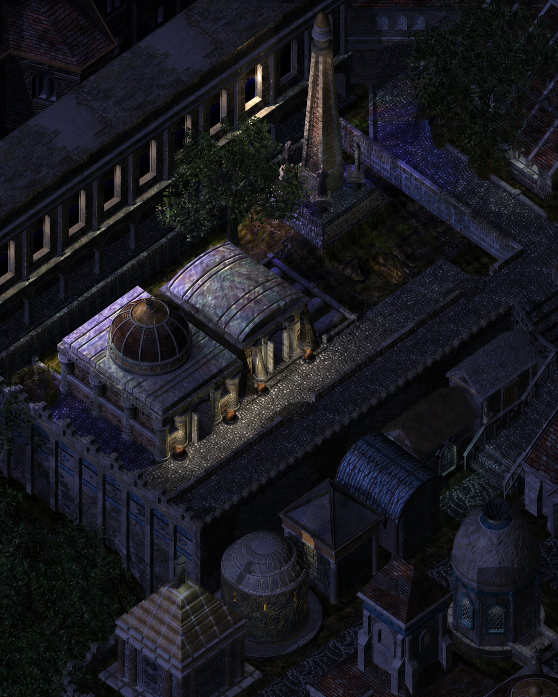
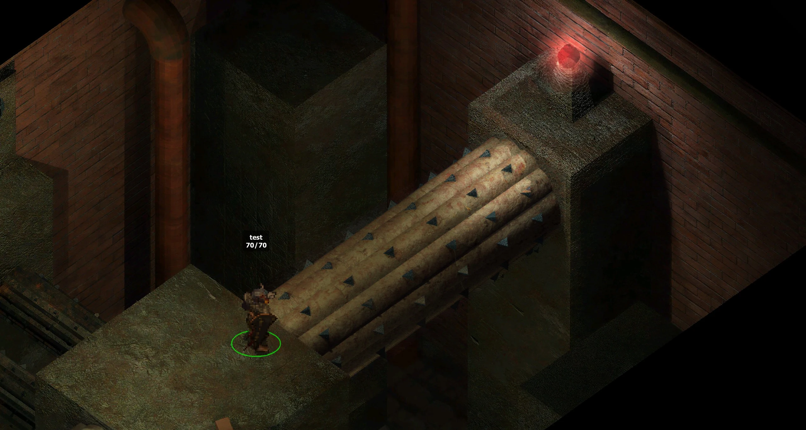
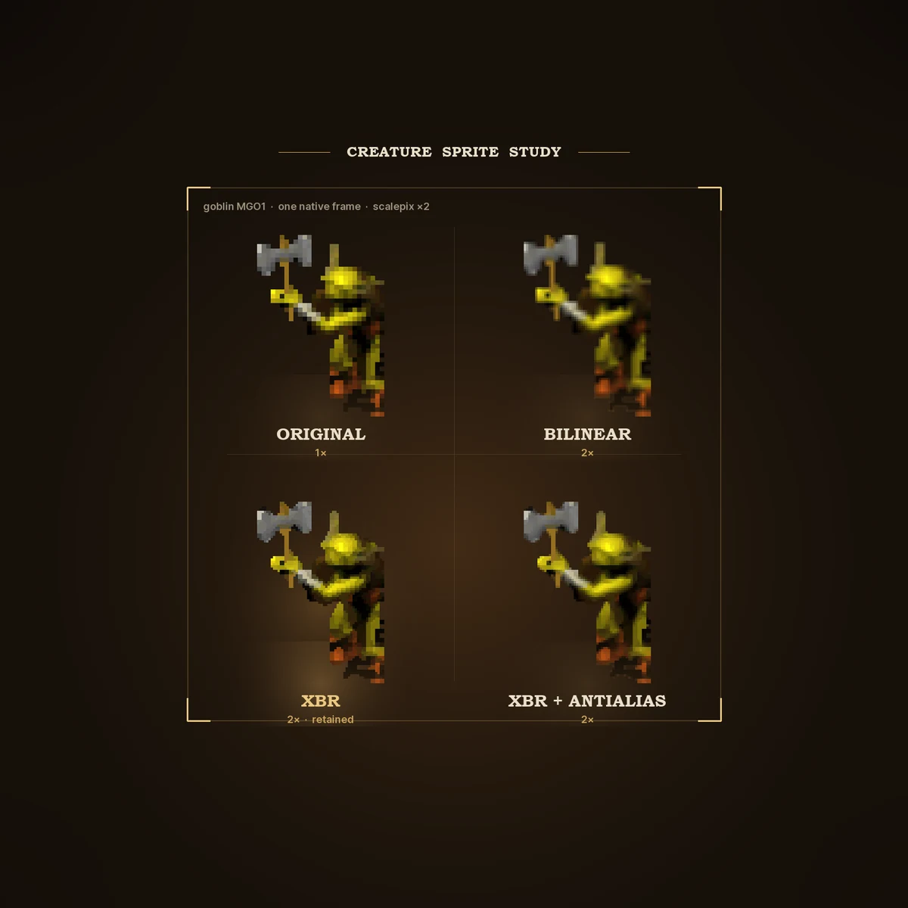

01
Backgrounds
An old player’s local AI experiment
I played BG2 when it came out. This is a personal attempt to revisit its art with local AI models and agents: improve the scenery and animation where it works, and keep the game’s strange old atmosphere intact.
Not a remake
The original art is the reference, not raw material to replace. If an upscale stops feeling like Baldur’s Gate II, it gets reworked or left alone.
A map I know by heart
Each map is a small experiment: preserve the framing and painted mood, then see whether extra detail genuinely helps. Drag the handle to compare the result with the original.
 Vanilla ×1
Upscaled ×4
Vanilla ×1
Upscaled ×4
AR0700 · Waukeen’s Promenade · Day · Crop 02 — matched x1 and x4 project captures.
What I am tinkering with

Backgrounds

Things that move

Still experimental
Not a programmer
I started with almost no technical background and learn while doing. It is fascinating — and it also means not everything is perfect yet. Local agents help me understand formats, run cautious tools and inspect the output; anything that does not hold up goes back to the bench, because the goal is a clean, reliable, polished result.
Read the work notes